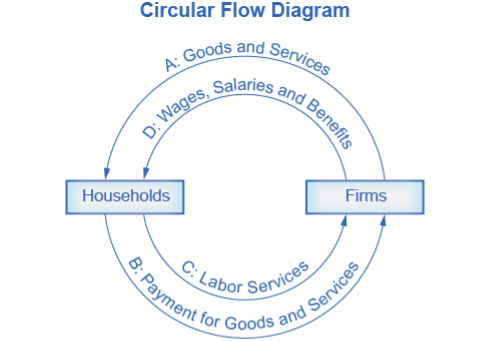

Microeconomics and Macroeconomics
1 Learning Objectives
By the end of this section, you will be able to: - Interpret a circular flow diagram - Explain the importance of economic theories and models - Describe goods and services markets and labor markets
John Maynard Keynes (1883–1946), one of the greatest economists of the twentieth century, pointed out that economics is not just a subject area but also a way of thinking. Keynes (Figure 1) famously wrote in the introduction to a fellow economist’s book: “[Economics] is a method rather than a doctrine, an apparatus of the mind, a technique of thinking, which helps its possessor to draw correct conclusions.” In other words, economics teaches you how to think, not what to think.
LINK IT UP
Watch this video about John Maynard Keynes and his influence on economics.
Economists see the world through a different lens than anthropologists, biologists, classicists, or practitioners of any other discipline. They analyze issues and problems using economic theories that are based on particular assumptions about human behavior. These assumptions tend to be different than the assumptions an anthropologist or psychologist might use. A theory is a simplified representation of how two or more variables interact with each other. The purpose of a theory is to take a complex, real-world issue and simplify it down to its essentials. If done well, this enables the analyst to understand the issue and any problems around it. A good theory is simple enough to understand, while complex enough to capture the key features of the object or situation you are studying.
Sometimes economists use the term model instead of theory. Strictly speaking, a theory is a more abstract representation, while a model is a more applied or empirical representation. We use models to test theories, but for this course we will use the terms interchangeably.
For example, an architect who is planning a major office building will often build a physical model that sits on a tabletop to show how the entire city block will look after the new building is constructed. Companies often build models of their new products, which are more rough and unfinished than the final product, but can still demonstrate how the new product will work.
A good model to start with in economics is the circular flow diagram (Figure 2). It pictures the economy as consisting of two groups—households and firms—that interact in two markets: the goods and services market in which firms sell and households buy and the labor market in which households sell labor to business firms or other employees.

Firms produce and sell goods and services to households in the market for goods and services (or product market). Arrow “A” indicates this. Households pay for goods and services, which becomes the revenues to firms. Arrow “B” indicates this. Arrows A and B represent the two sides of the product market. Where do households obtain the income to buy goods and services? They provide the labor and other resources (e.g., land, capital, raw materials) firms need to produce goods and services in the market for inputs (or factors of production). Arrow “C” indicates this. In return, firms pay for the inputs (or resources) they use in the form of wages and other factor payments. Arrow “D” indicates this. Arrows “C” and “D” represent the two sides of the factor market.
Of course, in the real world, there are many different markets for goods and services and markets for many different types of labor. The circular flow diagram simplifies this to make the picture easier to grasp. In the diagram, firms produce goods and services, which they sell to households in return for revenues. The outer circle shows this, and represents the two sides of the product market (for example, the market for goods and services) in which households demand and firms supply. Households sell their labor as workers to firms in return for wages, salaries, and benefits. The inner circle shows this and represents the two sides of the labor market in which households supply and firms demand.
This version of the circular flow model is stripped down to the essentials, but it has enough features to explain how the product and labor markets work in the economy. We could easily add details to this basic model if we wanted to introduce more real-world elements, like financial markets, governments, and interactions with the rest of the globe (imports and exports).
Economists carry a set of theories in their heads like a carpenter carries around a toolkit. When they see an economic issue or problem, they go through the theories they know to see if they can find one that fits. Then they use the theory to derive insights about the issue or problem. Economists express theories as diagrams, graphs, or even as mathematical equations. (Do not worry. In this course, we will mostly use graphs.) Economists do not figure out the answer to the problem first and then draw the graph to illustrate. Rather, they use the graph of the theory to help them figure out the answer. Although at the introductory level, you can sometimes figure out the right answer without applying a model, if you keep studying economics, before too long you will run into issues and problems that you will need to graph to solve. We explain both micro and macroeconomics in terms of theories and models. The most well-known theories are probably those of supply and demand, but you will learn a number of others.